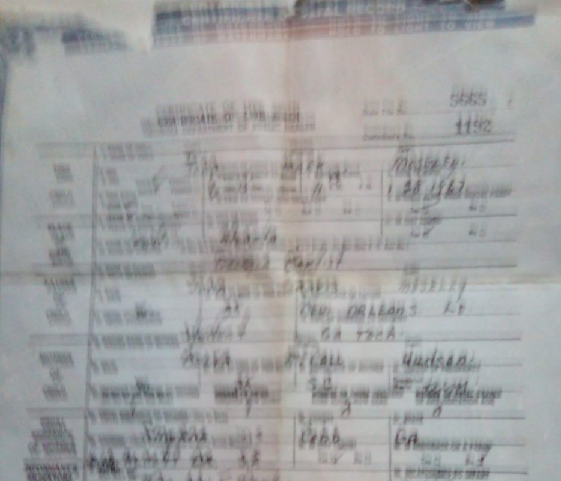
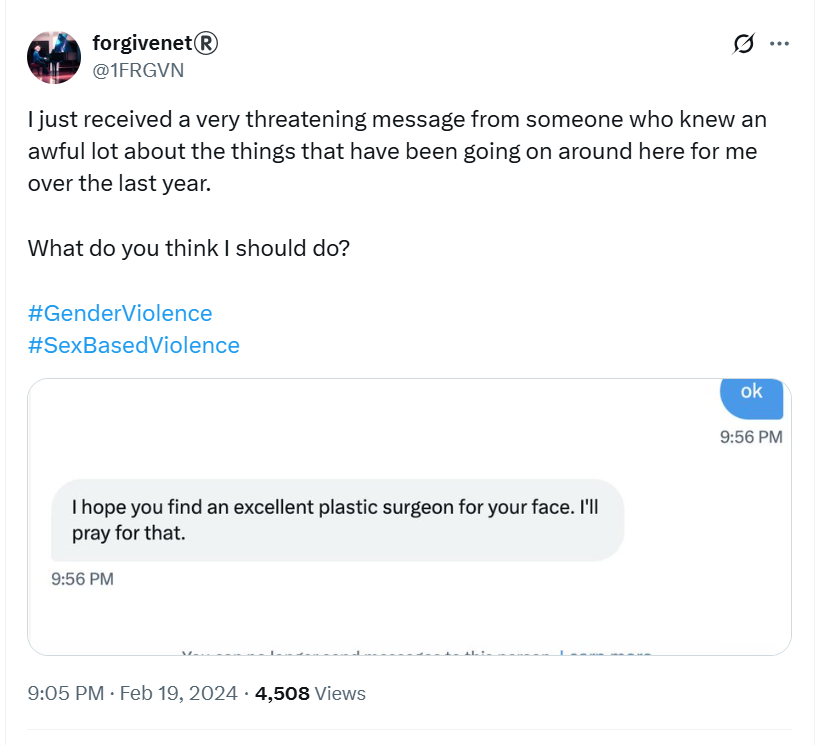
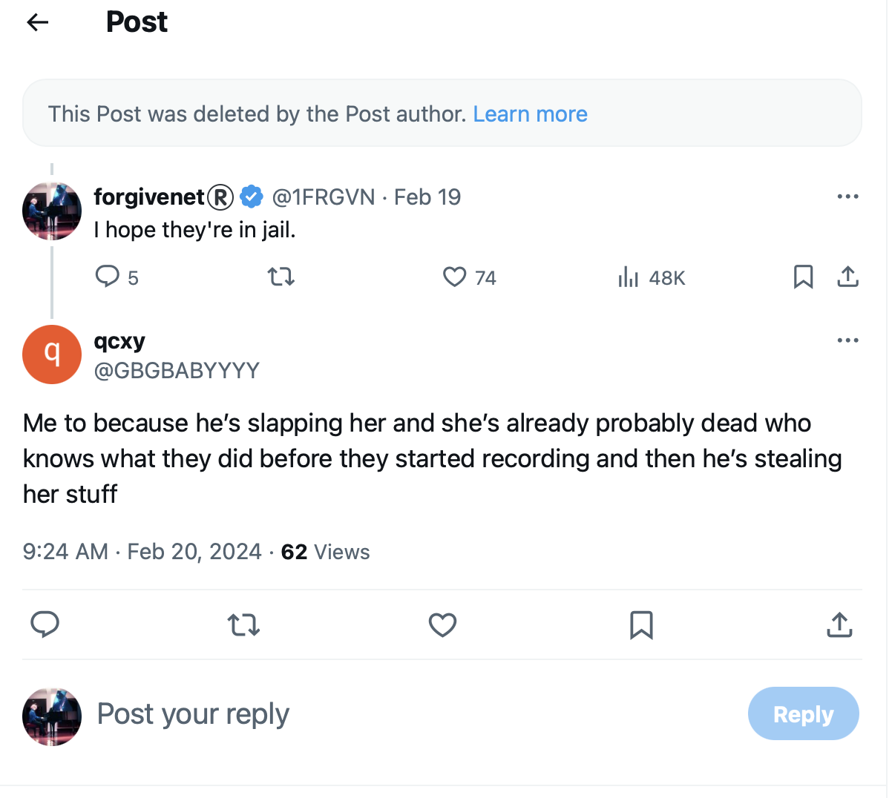
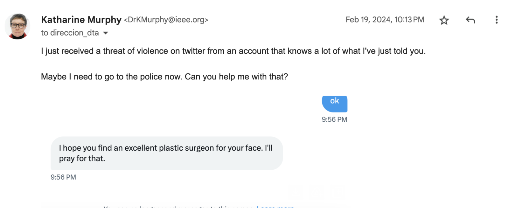
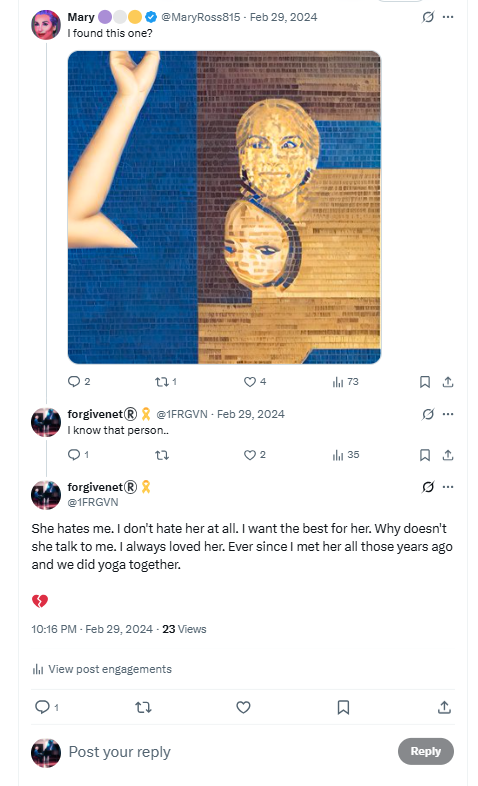

February 2024¶
Domestic violence in choir class¶
- Salva, the choir master, tells us we’re going to be singing a new song for a sudden concert to be held at the Centro Social just before Easter.
- It’s La Puerta Violeta by Rozalén.
- The song is about domestic violence; apparently written with the intention of raising awareness about male violence against women.
- The words are very triggering and Salva’s use of the song seems to me to be in celebration of domestic violence, which I am, arguably, suffering at the hands of the whole town and beyond.
- As I hear and understand the words of the song in class, I feel more and more anxious and alarmed.
- I watch the woman who sits beside me check my fingernails (which I chew and make bloody when I’m stressed).
Lyrics in English
A sad girl in the mirror He looks at me prudently and doesn’t want to talk There is a gray monster in the kitchen That breaks everything, that doesn’t stop screaming I got a hand on my neck that subtly It prevents me from breathing A blindfold covers my eyes I can smell the fear and it’s coming I have a knot in the strings that soils my voice when I sing I have a guilt that squeezes me It lands on my shoulders and I have a hard time walking But, I drew a purple door on the wall And when I entered I freed myself, as the sail of a ship unfolds I woke up in a green meadow, far away from here I ran, I screamed, I laughed I know what I don’t want, now I’m safe A flower that withers A tree that does not grow because it is not its place A punishment that is imposed on me A verse that crosses me out and annuls me I’ve got my whole body chained up (Uh, uh, uh) Cracked hands, a thousand wrinkles on the skin Ghosts talk in the back of the neck The wound reopens and bleeds (Uh, uh, uh) There’s a goldfinch in my throat that’s flying hard I have the urge to turn the key and not look back So I drew a purple door on the wall And when I entered I freed myself, as the sail of a ship unfolds I woke up in a green meadow far away from here I ran, I screamed, I laughed I know what I don’t want, now I’m safe
- I feel an intense aggression towards me in the classroom coming from Salva, the French horn player beside me, Samuel who wears a chequered shirt which triggers me for reasons I’m unaware of, and others.
- Undoubtedly I am ingesting some substance without my knowledge that exacerbates intense feelings of anxiety.
- While all this is going on, I realize that one of the other songs we have been singing since September has a repeated refrain, “ka ka ka”, words I see constantly from online abusers.
- The song is Dry Your Tears Afrika by John Williams, and the score we all received in class had been edited to add ka-ka-ka at the ends of song lines.
- The African reference (black men) is now not lost on me either.
New e-SIM with Yoigo¶
- I decide to get a new e-SIM from Yoigo on 7th February in the hope it might impede hackers.
- I go to the store in town and they do the backend administration and send me a confirmation email.
- It’s such a complicated business however, I never manage to set it up, even though they sent me detailed instructions.
- The relevant part of the instructions on the email was missing, i.e. QR code, so I was never able to set up the e-SIM.
- I believe the email was interfered with and the QR code removed or made unreadable so that I could not set up the e-SIM.
- I was starting to find really very simple tasks quite impossible around this time.
Another email to the Generalitat (the school board for the region)¶
- Things are getting worse for me, online and in person.
- I feel I’m in constant danger.
- I’m becoming more and more stressed and psychologically/emotionally injured.
- No one outside of X communicates with me, and I don’t know who to ask for help as everyone has ignored me when my complaints should have been taken extremely seriously.
- I’m completely alone and the weight of what is going on for me is overwhelming.
-
It seems sensible to have some formal documentation on record and so I email the Generalitat Valenciana in Alicante, details given by the previous brief response I received in January:
- Another complaint in English.
- Another complaint in Spanish.
- Proof of sending via email -> this document includes an extra short email I wrote regarding some of my concerns about Mercedes C Lara, and a screenshot of the threat of violence which prompts me to go to the police later in the month.
My email to the Generalitat
Saturday 10 February 2024, Dénia Alicante Dear sir or madam, This letter is following the recent complaints I made about a teacher and his associates, particularly the computer technical staff- at the conservatory of Dénia to which I have received no reply even though the male aggressive behavior against myself continues. What has happened to me over the last 18 months is extraordinary, and a lot of it is even criminal, but my foremost concern is that this teacher and his computer technician associates have unlimited access to children, mostly girls, and their mobile phones. The ease and hubris with which he and his associates hacked my phone and laptop, took photos and videos of me half naked when I was home alone and disseminated them across the town, tracked my physical movements with my phone and set up intricate coordinated “attacks” around town and elsewhere, situations which were designed solely to terrorize me, can only mean that he has been doing similar with the minor children and women he has unlimited access to as a teacher over the years. Currently, his students are giving me the overt cold shoulder, which is most welcome in fact as I am going to the conservatory to study music and not engage in what can only be described as being the victim of coordinated misogynistic stalking and bullying, male violence against women, in fact. However, I remain more concerned about their safety and dignity than my own. So many things have happened, the “attacks” have been pretty constant since October 2022 but crescendoed around June 2023 and since then. There are so many situations I could mention. For example, you might like to ask Domingo’s students what they were told about me in October 2023 with regards to a very subtle tweet I posted on one of my accounts which was misinterpreted by him as me asking someone to travel somewhere in a romantic sense with me. Something ironically Domingo also mistakenly believed he did with me in December 2014 when I asked him to visit London with me, as a friend, and he lied to the conservatory about being sick so he could come with me and miss the important departmental meeting that December 2014. Domingo’s students, in October 23, after I posted this misinterpreted tweet, came up to me in choir class and asked me directly about the trip I was going on with a boy and laughed and giggled as if they had been told something salacious about it, which was absolutely ridiculous. But this is the kind of thing that has been going on constantly. Teachers should not be playing these sorts of games with their students. Are there no rules teachers have to follow with respect to their behavior towards students and minors or is Domingo Cano somehow exempt from them? I believe now that Domingo’s original interest in me, apparently romantically, in 2014 was fake, and his true intentions were much darker. I found myself in a dreadful situation with this piano teacher who pushed himself into and involved himself personally in my life, someone who was extremely sexist, insulting, and rude and, in the end when it all went wrong for him, inevitably, I couldn’t do anything about it apart from ask for a new teacher. When men in power overstep boundaries like this, we have to put up with them. We can’t get away without drama. They know this. The story he has been telling everyone to discredit me is the sort of thing you think you might expect from teenagers at high school. They use the fact that they believe they tricked me into thinking one of the teachers liked me romantically to discredit and shame me. The problem is I knew about this trick from the choir concert in December 2022. It was so obvious and extremely unpleasant. Nevertheless, I played along, and by doing so they revealed their intentions and the fact that they have no limits on what measures they might take to hurt a student at the school they don’t like. Domingo has control of WhatsApp groups with his students as members, he instructs them to spy on me and report back to him, and there is a very famous WhatsApp group that either himself or the computer technician is managing which publicizes my tweets to the members, but only tweets they have deemed interesting for whatever reason. This is the definition of stalking and is extremely concerning that public civil servants would have no qualms about doing this to a student. Everyone knows about this group. The interest has dropped off recently, since my most recent complaint, which is welcome and something of an admission of guilt too, but they are still sharing some of my tweets. I can tell because you can see which tweets people are translating and then they make it known to me at the school that they heard about it. Someone is deciding which ones to share too and the criteria is not clear but my more condemning tweets regarding male violence, voyeurism, and sexual abuse do not get shared. Many of my tweets that have been disseminated amongst the conservatory staff and beyond are misinterpreted, taken personally, and have even caused teachers to be extremely angry with me when I have gone to the school! You might like to ask any of the teachers how extremely private health matters I only ever told Google are common knowledge? They have been utterly obsessed with me. It’s astonishing behavior, totally unacceptable from civil servants responsible for minors, other people’s children. Nevermind my horrific experiences, I am extremely concerned for the safety and dignity of the young girls they are responsible for. There can be no way I am the only victim of this sort of thing. I also cannot believe I am the only person to ever complain about this sort of behavior which was designed to destroy me, to frighten me into leaving and to never return. The delight they took in engaging in this behavior was palpable and they were not expecting it to backfire so spectacularly. A teacher who propositions a student romantically and gets turned down and becomes so upset they feel justified terrorizing them extensively over 10 years later should not be anywhere near women or children. It is gender abuse. The way Domingo Cano spoke about the school girls walking past us in the street as we were having coffee one afternoon after class in October 2014 alerted me immediately to the fact that Domingo Cano has an extremely troubling over-sexualised view of schoolgirls alongside his appallingly low view of women in general. I tweet a lot of concerns about child safety, gender abuse, and pedophilia. In fact, you might call me a feminist activist of some sort on Twitter and I have been so for nearly 3 years now. I believe these child-safety tweets surprised and upset Domingo and his associates to an even greater extent and put me in even more danger from them. Indeed, they have always been very quick to show me, in an exaggerated sense, how much power they have over young girls by overtly touching them in front of me, for example. It is appalling. He is often seen in town chaperoning his young girl students and is mistaken for their father by the local townsfolk who don’t know him. In my view, he should be nowhere near young girls or have the unfettered access to their phones that he has been enjoying for many years. I hope you will take some of what I am saying seriously, this is a very serious matter, and has caused me enormous distress and stress. I suspect if you checked any of these men’s hard drives you would find concerning material. And if you check historical complaints you are bound to find a bunch of complaints about him that are similar to this. I don’t want to go to the police but if it continues I will eventually have no choice. However, I think my next port of call will be the media as it is such an astonishing story and extremely interesting to the public, especially parents. As a Spanish taxpayer and upstanding member of the local, European, and global community, I have every right to study the piano at your most wonderful conservatory in Dénia in peace and without being in danger from misogynists who find my existence offensive. It is a great privilege for me to attend the conservatory and study the piano and the extraordinarily high level of teaching is second to none. It is a great shame that a few abusive men have so much control over vulnerable students they are responsible for and don’t seem to know how to behave like adults within the law. Please let me know if you need any further information. If anything else comes to light I may reach out again. With the very best, Sincerely, Dra Katharine Murphy
- When I read through this email, I sense my growing anxiety and exhaustion with what’s happening to me.
- Please note, dear reader, at the time of writing, September 2025, it is business as usual at the conservatory of Dénia, Alicante, Spain.
Everyone at the conservatory knows I wrote to the Generalitat¶
- When I go to the conservatory the following week, it is very clear to me that everyone knows what I have said in the email I sent to the Generalitat at the weekend, particularly with regards to Mercedes, who is crying and moaning at reception with Gloria as I pass them.
- The bullying from Ana and Ana and others online and in-person ramps up.
- Everything I experience feels, again, like it is set up and contrived.
- No one speaks to me.
- The Generalitat do not reply.
Constant gang stalking at the conservatory¶
Domingo’s students conspire in chamber music class¶
- Chamber music class is also unpleasant.
- No-one talks to me (compare this to the year before up to June 12th 2023) when everyone chatted to me in a friendly manner constantly, even if they were just information-gathering for Domingo.
- Domingo’s students, Elvira a minor and Samuel an adult male, are on WhatsApp constantly.
- The chamber music teacher, Alfonso, seems to be a little frustrated with them, and even mentions it out loud at one point.
- You’re WhatsApping Domingo again? he asks in an annoyed manner.
- Alfonso doesn’t appear to have a choice on what to study in the classroom if Domingo insists upon overriding him.
- We’re always listening to some piece of music that has a meaningful narrative.
- At one class, we have to listen to a hugely emotive piece with a narrative about about poisoning, Irish witches, and a tragic romance.
- It’s a bit intense don’t you think, I say.
- It’s all very dull and boring, but apart from Domingo’s gang-stalking activities, the class is good and I enjoy it.
Ana and Ana¶
- Ana Girbes continues to be really angry at me for no reason whenever I see her, as does Ana Requena.
- On February 14th, Valentine’s day, as I’m climbing the stairs to choir, Ana and Ana are sitting huddled together with their backs to me in Ana Girbes empty classroom with the door open as I pass so I can see them.

- No-one else is around, curiously.
- Ana Girbes sees me and motions towards me and Ana Requena rushes out and peers at my face angrily, without looking at me or saying anything at all.
- It’s as if she’s looking to see if she can see Valentine himself in my face. Maybe she can.
- I assume the intention is for me to think she is concerned I will have put makeup on for Valentine’s day so that I think she thinks I have a date with the trumpet teacher.
- It’s absolutely ridiculous and I know they are laughing at me as I continue on up to choir.
- I wonder now what they thought they were achieving.
- At a minimum, they must have intended I have a severe nervous breakdown.
- I wonder how many others they drove to madness or suicide?
- I wonder how many youngsters they shepherded, porn-ready, to the criminal gangs that control the town?
My funny Valentine¶
- Wow.
Nacho and the smug man destroying evidence¶
- Every time I go into practice the piano - most lunchtimes - something is going on.
- I see Nacho carrying big cases full of files and desktop computers.
- I see the smug man wheeling a trolley full of desktop computers into the conservatory offices.

- They seem to always be doing it as I arrive for practice, so I assume it is intended as yet another choreographed idiocy for me to become curious about.
- My assumption is that they are trying to make me think the Generalitat is taking my complaints seriously and is doing due diligence on conservatory files and computers.
- It concerns me, if that is the case, that the culprits themselves are doing the investigations.
- But looking back, it’s more likely my unassailable good opinion of people was still in the way and instead they were trying to make me think they were destroying evidence.
Official with a clipboard¶
- At class time, an officious looking black woman (Domingo’s ex again?) wonders around the halls outside the classrooms where I can see her.
- She is carrying a clipboard and making notes on it.

- At the time, I assume this is an attempt to persuade me that the Generalitat are investigating and have sent an inspector; something that actually does happen at my piano class in a month’s time.
- Now, at the time of writing, I believe that everything I witnessed is fake and set up.
- I’m curious if the Generalitat are aware of all this outrageous behavior and how many more complaints they’ve buried over the years.
- Indeed, are members of the Generalitat taking part by accessing the live-streams?
Ana & Domingo play concerts¶
- I see advertisements on the conservatory walls for concerts.
- Ana Requena and Domingo Cano are both performing concerts this month; at the boat club or in room 5.

- It’s like the conservatory is declaring: we are 100% committed to destroying one (and more) of our students, and we know she is being drugged in class, sedated and raped in her apartment, and has been for a few years now, we know the same thing was happening to her while she studied with us in 2014-15 too, and we are fully aware about other targets in the school, some very young, and we’re enjoying watching it all, and taking part, and … and … we don’t care.
- We’re just carrying on as normal because that’s what we do here.
- It’s confusing to me because I still believe the Generalitat are going to help me.
The Dénia porn-gang attempts to recruit me¶
- I’m followed by a weird fake account, Mark Moseley
@markmoseley072, who is just like the other fake accounts that interact with me directly, but decidedly more violent in tone. - He seems unhinged.
- Here are my tweets to him that lead up to us DM’ing.
- All his tweets to me have been deleted.
- He is, apparently, a homeless drug addict from Portland Oregon but he baits me with information only the people of Dénia would know.
- For a few days or maybe a week or so running up to the 19th February, I see his irrelevant and sporadic posts on my timeline, at the top; posts that suggest he is enduring a romantic obsession.
- I empathize; and I think it could be the trumpet teacher, or someone close to him.
- He gives many details of things only he, the Cano-Lopezes, or their associates could know.
- To be honest, I’m so desperate to communicate with the trumpet teacher, I believe everyone I interact with online could be him.
- I’m aware, also, that even if these people are not the trumpet teacher, something I’m pretty sure is the case, the trumpet teacher will see all my attempts at communication anyways.
- (That was really my state of mind, and my approach to the online abuse the whole time.)
- I tell him I don’t believe he is who he says he is.
- He posts an identification document for Mark Moseley from Portland Oregon, in exactly the same way other accounts have done; for example
@lucyinbetween(Lucy Adams from North London, Paul’s friend). - I guess now that the account was another delegate, hacked, or stolen account.
- It concerns me these people have copies of apparently genuine identity documents from all over the world.
- He tells me how he had prayed incessantly for something, for help, and I came along.
- It seemed reasonable to me, still does.
- He asks me would I die for him. I do not respond.
- He says he would die for me.
- In a DM, he tries to recruit me to his honey trap organization.
- I refuse in no uncertain terms.
- He gets annoyed and threatens me with violence.
- There’s a copy of the whole DM here.
- “We can end this. So let’s end this k?”, he says, and I take it to mean he is suggesting that we can end the vile and vicious prolonged psychological torment (and sexual abuse I’m unaware of) that has been going on since I moved back in February 2022 at the hands of the Cano family.
Mark Moseley’s full DM
Brains Rewired Here (Parody) @markmoseley072 Welcome to High School 2.0 as we all find our clique. Joined February 2024 5 Followers Hi. We can end this. So let’s end this k? Feb 19, 2024, 9:20 PM You accepted the request yes, how? what do you want? Feb 19, 2024, 9:28 PM I want my 21-year-old daughter to not be terrified at the idea of bringing a new human being into this world. Feb 19, 2024, 9:29 PM why is she terrified? Feb 19, 2024, 9:30 PM Politics Feb 19, 2024, 9:30 PM how is this relevant? Feb 19, 2024, 9:30 PM Let’s start over. You play my side and I’ll play yours. Okay? Feb 19, 2024, 9:31 PM who are you?
I’m Joe Biden’s worst nightmare Feb 19, 2024, 9:32 PM this is not helpful look I know I’m easy to wind up and its a laugh an’ all, I can’t believe you would put so much effort into it though, I’m not that amusing am I? that’s the only way you got into my laptop etc … cos I’m just not that interesting .. . look, also, I know everything and I don’t really care Feb 19, 2024, 9:34 PM I only care about the safety of kids , that’s it that’s the hill I’ll die on Feb 19, 2024, 9:34 PM Then let’s die on that hill together Feb 19, 2024, 9:35 PM who are you?

Feb 19, 2024, 9:35 PM JC talks about something in ACIM about relationships and there being holy relationships Feb 19, 2024, 9:36 PM I never knew what it meant, and I still don’t but … there are signs yah yah they’re not easy, in fact they turn the world totally upside down … Feb 19, 2024, 9:37 PM Holy relationships have God in the middle all of the time, as measured by both humans believing that Feb 19, 2024, 9:37 PM it’s a relationship with God yes God in the other person, you recognise God in the other person when you find something like that , you can be Creative in the truest sense Feb 19, 2024, 9:38 PM Three-way human relationships tend to be VERY unstable Feb 19, 2024, 9:38 PM that’s what JC told me … yes, we enter the ark 2-by-2 Feb 19, 2024, 9:38 PM Evolution fixes that with inserting perfection as the third “person” ideologically speakinh Feb 19, 2024, 9:39 PM that’s you then ay? Feb 19, 2024, 9:39 PM so what do you/he want? Feb 19, 2024, 9:40 PM I want what you want. Safe kids Feb 19, 2024, 9:40 PM I mean sure, we can save the world, that’s the project … but practically, now, in this business, are we ending this, or what? Feb 19, 2024, 9:40 PM Dating service. You find single women. I find kind single men; probably nice men who get tongue-tied around women. We match them up. Feb 19, 2024, 9:42 PM I don’t need photos. I need only what each woman is looking for. Feb 19, 2024, 9:44 PM well, there’s a single woman here, should I ask her? Feb 19, 2024, 9:44 PM Yes. She wants someone she trusts. What else? Feb 19, 2024, 9:44 PM I have not been looking for a man since 2010. All those things, I can hardly remember what they are anymore. I know how I felt. I want that. It was not just sex. I wasn’t even in 2010, someone found me, that’s usually been the way with me. I had no boundaries so men easily have pushed their way into my life. Feb 19, 2024, 9:47 PM Understood. I mis-communicated. Feb 19, 2024, 9:47 PM I only had one other genuine relationship in my life and only because I drank at that time and had false confidence. But it was beautiful. Feb 19, 2024, 9:47 PM Your task is to find single women who are interested in meeting kind shy men. Feb 19, 2024, 9:47 PM I found one right here. See I said one other … amazing Feb 19, 2024, 9:48 PM I found one right here. Ask her something interesting on this topic then. Feb 19, 2024, 9:49 PM it’s me dude Feb 19, 2024, 9:49 PM Oooooooooh Oh. Okay. Can we do a “proof on concept” first? To refine our methods? Feb 19, 2024, 9:50 PM how so? Feb 19, 2024, 9:51 PM You find a single woman who is not you, who wants to meet kind shy men. Feb 19, 2024, 9:51 PM why would I do that? Feb 19, 2024, 9:52 PM I’ll do the same, but with men. Then, if we match them up well, then philosophically speaking you and I will necessarily have the opportunity to meet at their wedding. Feb 19, 2024, 9:53 PM why the f**keries bruv? Feb 19, 2024, 9:53 PM It’ll be fun. I promise. You can start with fake profiles! Feb 19, 2024, 9:54 PM noooo, I’m not doing that, I’ve no time for the bs honestly Then I have no time for you. You don’t trust me. I’m sad Feb 19, 2024, 9:55 PM ok Feb 19, 2024, 9:56 PM I hope you find an excellent plastic surgeon for your face. I’ll pray for that. Feb 19, 2024, 9:56 PM
- Joe Biden’s worst nightmare is Trump, of course. The *trump*et teacher meme always used trump as a trigger or signpost.
- At the end of this chat, when I refuse to sign up to whatever they want me to do, he threatens me with violence.
- His message says: “I hope you find an excellent plastic surgeon for your face.”
- I believe this to be a direct threat of violence towards me; possibly an acid attack in the town.

- I’m scared so I post the threat to my X friends and ask them what they think.

- You can see some of their replies here: https://x.com/1FRGVN/status/1759685644278723021.
- I see some other threats which are unsettling, including replies from fake quick-spin-up accounts the following morning before I go to the police. An example:

- On Sunday 24th November 2024, the account was deleted (now suspended) and so I am unable to see any past messages I didn’t screenshot.

- Only a few days prior to drafting this section up, on Wednesday 20th November 2024 in Bangkok, I checked the account and it was still live and posting.

- When I got around to drafting this section, just days later, the account had been deleted.
- I consider that to demonstrate how the porn-gang hackers monitor everything I do in real-time.
- Going back to the original threat, I consider the threat to be credible and to mean that someone may throw acid on my face.
- I send a copy of the threat to the Alicante directorate too, asking them if they will now do something.

- There was, of course, no reply from the Generalitat.
- I am starting to get seriously stressed and anxious now. And I’m scared too.
- I call 112.
- I’m told I have to go to report the matter in person to the police.
- I decide, very reluctantly and with a heavy heart, to go to the police the following morning.
Babies and politics¶
Feb 19, 2024, 9:28 PM</br>
I want my 21-year-old daughter to not be terrified at the idea of bringing
a new human being into this world.</br>
Feb 19, 2024, 9:29 PM</br>
why is she terrified?</br>
Feb 19, 2024, 9:30 PM</br>
Politics</br>
- Is this an admission from the porn-gangs that they are using all the babies they can get their hands on in the region for porn, even the babies born to their own family-members, and the (potential) mothers know it?
- Have the gangs become so bold now that, not only have they successfully infiltrated the school system, but all the women in the region know exactly what’s been happening to the babies over the last decades; generations of children growing up severely traumatized?
- Is the Mark Moseley character the second trumpet teacher, the fourth, Gloria’s brother, known to have fathered multiple children in the region, or the monster?
- Would all those men be involved in procuring babies for Hazel Smith and the British porn-gang’s most lucrative product made by their flourishing baby-rape department?
- Was this a line that, once crossed, a tiny segment of the community could not live with?
Documenting my conscious awareness on X¶
- It’s the same evening.
- I’m scared.
- I’ve just got off the phone to the police.
- The constant abuse is exhausting.
- Everything that is happening to me is related to how I’m being treated by teachers and staff, and some students, at the conservatory.
- I publish my story on X for evidential purposes and add the posts to my highlights.
- Everything in highlights relates to the conservatory gang stalking: https://x.com/1FRGVN/highlights.
- In retrospect, this is such an interesting documentation exercise because it shows how much I was aware of at the time, which is very little really.
- I have made assumptions on what is happening to me based on what I consciously know and remember.
- The more hideous sedated sex crimes, constant spy-cam voyeurism, and live-streaming - which everyone in the town must know about - I’m unaware of at this time.
- Indeed, in retrospect, the full story of what has been happening to me at the hands of Domingo Cano and his family and associates rather explains the psychopathy of teachers and staff at the conservatory, which was inexplicable to me at the time.
- Of course, teachers and staff involved in gang-stalking women and children for decades would be extremely keen to shut me up.
- Moreover, when normal people aren’t able to do anything about the evil around them without getting murdered themselves, madness is safety (see, for example, Nazi Germany) although never an excuse.
Publishing my story in highlights¶
- Writing things down was an insurance exercise in that, if anything did happen to me, all the information I had at the time would be available to the world.
- The more that teachers and staff at the conservatory terrorized me and threatened my life, the more scared I became, and the consistent result was that I was compelled to write everything down.
- They know I am a writer; it is one of my actual jobs. What did they think I was going to do?
- Looking back I remember a state of mind that was always hoping the nightmare would end, but it never did.
- Let’s have a closer look at what I knew in February 2024.
- Reading these back is so interesting for me. I had no idea what was really going on, except everything I do say is always consistent and points firmly to the truth.
Part one - collecting my thoughts (the story)¶
Part one
Collecting my thoughts - a (the) story
10 years ago, the most wonderful thing happened to me. I managed to pass the exams and audition to get a place studying piano at the stellar and exemplary music school in Dénia.
Curiously, at the audition, one of the piano teachers introduced himself to me in a friendly way and spoke excellent English and was very kind and charming. I found him a bit odd at the time and it turned out he would be my teacher when I started the course.
After our first class he invited me out for coffee. I said no. The second class he did the same. I said no. The third class, worn down a little, I agreed.
I found this man to be extremely sexist which is always deeply offensive to me. His comments about women and girls were insulting. It was like meeting a vulgar man from the 50s. He insulted women drivers, and made mock surprise about women being good at anything, and insisted women could not be politicians.
I found him ignorant and vulgar but he was my piano teacher and I had no choice but to continue with him.
Now, some of you may know I am a #csa survivor. This has meant that men have always been able to push their way into my life as I never had any boundaries. The men I actually liked, I wasn’t able to communicate with as I became anxious about it. The #csa I experienced was the girlfriend model where a boy pretends to be in love with you, which was like a drop of water after a 10 year drought where I’m from, but it’s all a nasty trick and your life is never the same afterwards if you manage to keep it to any extent.
I liked a lot of men over the years and I was always terrified to speak to them, even when they liked me back, which they often did. It’s kind of tragic.
I had one true relationship and that was because we drank and so I had false confidence. It was a very beautiful relationship, but doomed, of course.
Anyway. The rest of my few boyfriends just pushed their way into my life as I had no boundaries and they often knew that. The piano teacher was one such as this. I didn’t find him attractive and I also felt that he didn’t find me attractive either. There wasn’t that predatory feeling of a man wanting sex. Being with him was more like being with gay men who aren’t interested.
So I didn’t feel unsafe with him for that reason and we were friends. And yet I was observing his appalling behaviour. Just observing. And then one afternoon after class we were having coffee and a group of schoolgirls walked by and he salivated and leered over them, even whistling at them, and I felt sick to my stomach, as you might imagine.
But he was my piano teacher so I couldn’t get away. And I had to go home to visit parents and my brother was there and he’d just spent 10 years listening to Alex Jones and the like and had turned into an MRA. I didn’t want to be near him so I asked the piano teacher to come with me. We were friends after all but I had very little respect for him, zero in fact.
Crazy isn’t it. I took one vile misogynist with me to protect me from another vile misogynist.
Anyway, he visited and I took him to concerts and we went to wonderful restaurants. I’m a great host and I like to treat people well. He love-bombed my mentally unwell mother, which was extremely weird and made me very uncomfortable, and that makes me wonder what his intentions really were. I never met anyone from his family.
But the worst of it was he was unbelievably rude the whole time. He eyed up and flirted with women constantly. It was embarrassing to be with him.
Unsurprisingly, our relationship after that became extremely strained. He realised I wasn’t interested and started telling the other teachers at the conservatory I was frigid, he made a particularly violent threat to me related to his family, and goodness knows what else he said and to who, and eventually I could take no more of it and asked for a new teacher.
I stayed another year and was cold-shouldered by everyone and went back to the UK for work.
Then a few years ago I returned here, and took the exams again and got back in to study the piano. I was delighted. That was June 2022. The piano teacher saw me at that time and was obviously furious that I had dared return.
And he had the whole summer to plan how he was going to “get me” … for what is anyone’s guess, not wanting anything to do with him in 2014? Daring to return? Not being a willing participant in his abusiveness? Who knows.
The bullying and harassment started pretty much immediately I began the course in September 2022; people making weird comments, a bad bad feeling all the time, an effigy hanging in the wasteland at Halloween that felt personally threatening, other stuff, but it all ramped up when the trumpet teacher entered … stage left.
Suffice to say the evil intentions the piano teacher had towards me did not quite work out as planned. In fact, I grew a bunch and surprised everyone, but not before they had seriously upset me, hacked into my phone and laptop, taken pictures and sound recordings, tracked my movements, bullied me into going public on Twitter, grassed me up to the traffic police, caused criminal damage to my property, set up a WhatsApp group to monitor my tweets and disseminated it amongst many many people who probably thought it was quite fun and are now implicated in something rather serious, and subjected to me what can only be called an organised, emotional (physical once) assault, harassment and bullying, and yes, I am a student at a school being bullied, stalked, and harassed by a teacher and his supporters.
And the person who threatened me tonight is one of this lot because they knew things only they could know.
To be continued …
Part two - the trumpet teacher¶
Part two
A (the) story - part two - the trumpet teacher
The trumpet teacher turned up at the conservatory at the end of November 2022 to teach my chamber music class. It was weird because I realised I had seen him just the week before when I was out walking with my English friends in Benijembla. He had been talking with one of our group at the cafe, and had her point me out to him. He had looked at me at that moment in a strange way, a way that I wouldn’t forget. Unable to maintain his attention on whatever my friend was talking about, he kept glancing up at me, grinning. His smile reminded me of how an ancient pedophile had looked at me once when I was 16. Like I was some sort of delicious food that he was going to consume and swallow and destroy.
The slim, long-haired woman he was with at the time, sitting with her coffee, looked upset about things, and I never forgot her look either.
So it was a surprise to see him turn up as the teacher a week later - late 2 months for some reason - and the fact we had met in that strange way just the week before felt somewhat sinister.
I fancied him. He’s an attractive man. And I felt dismayed too because I knew my PTSD would kick in and I probably wouldn’t be able to relate to him normally; but that was OK, I was used to that, I would just get on with that like I always did. But when we did speak, he was shy of me. He couldn’t look me in the eye. He liked me back.
There were sparks.
And then he started flirting, but it was a weird kind of gruesome, tacky flirting, as if he was acting a part because he clearly wasn’t that ignorant, and the words he said were symbolic of my experience with the piano teacher and so I knew it was all connected. But I couldn’t help flirting back, even under those circumstances, and then things became fever-pitched.
The other male teachers started to behave in a crazy manner whenever I was around. They came to peer at me at another’s invitation; who I was, what I looked like. I could practically hear the conversations they were having about me and knew it was all related to the piano teacher. It was very stressful and my kidneys were overworking cortisol.
And at the same time, bizarrely, after 8 years of fairly severe depression and emotional numbness, these feelings of attraction I was having started to become very strong. I couldn’t ignore them, but my PTSD reaction made me go into freeze and speak rudely and abruptly when he tried to talk to me kindly, just like always happened in those situations. And, also, the backdrop of lies and ill-will made the whole thing fairly intolerable.
Although maybe even due to all that, the attraction grew. It was electric. Every week I told myself I would ask him if he felt it too, and I never could. I wussed out every time.
And then I found his Twitter account online in a kind of miraculous way, and I followed it. He blocked me immediately so first I thought it wasn’t his, but when I went to class again, he was so angry with me I knew it was his account.
I thought he had blocked me because I was a #terf and he was (apparently, not so sure now) a secondary school teacher and didn’t want to be associated with me. Fair enough.
A few days later, for reasons I can only guess at, something dragged me out of bed at a ridiculous hour to write a tweet thread, in Spanish, saying what I would have said to him had I not suffered from PTSD. It went something like this:
I couldn’t say what I wanted to say to you when you tried to speak to me because I have been suffering from extreme anxiety for most of my life but more intensely these last 8 years and it is worse around men I like.
And that was more or less it, nothing major, although I did also say:
And due to my anxiety, in these situations, I never know what’s true or not.
…which might have been a red rag to a Spaniard.
In any case, it was a profoundly honest, vulnerable, and heartfelt tweet, and I could never be ashamed of saying something like that. Au contraire: It was empowering.
The next time I went to class, the energy in the whole conservatory had shifted. People were looking at me differently. The trumpet teacher treated me kindly (this overwhelmed me actually) and I, naively, thought he had told everyone what I had said and they cared.
But no-one said a word to me. Not a single word. Which upset me. So I got irreverent and tweeted things like.
You’re even more sexy when you’re angry.
and the like, which made me laugh. But I was annoyed because no-one was talking to me. It was very weird. I could feel the piano teacher’s energy all over it, like he was controlling everything. And then the trumpet teacher started tweeting messages that suggested he liked me.
I knew it was a trick. The fact it was a trick made my PTSD sky-rocket. It was a reenactment of #csa. But this time, I was older and wiser enough to have some resources to be able to deal with it. I was no longer afraid.
And, besides that, even though I knew it was a trick, and he never said a word to me, there was this electricity between us and it could not be denied.
One time, it was so intense, and there were many other people around, we could hardly look at each other cos we just went to inappropriate places when we did. He had to go stand at the back of the room to collect himself, with his back to everyone. He was there some time. In retrospect, that was very funny.
[And, for those in the know, there were the strawberries of course, but I didn’t know the significance of that at the time because no-one was speaking to me … by design.]
So back and forth I went to class, no-one said a word to me, and I could feel the lies and trickery, and the piano teacher’s energy was so obvious, so I tweeted a few home truths about him from time-to-time, just to piss him off and to let him know I was onto him, at least a little (he probably missed that completely).
And every time I did something like that, the energy at the conservatory shifted again. They were all suddenly furious at me, frowning, or even making dismissive hand gestures at me, and I couldn’t understand why no-one was talking to me, but everyone seemed to know everything I was saying on Twitter.
That was naive I guess, but I’ve been so uninteresting for so long that the very idea I would be of some interest to more than one or two people for any reason at all was just too far outside of my worldview.
That was also why it was so easy to hack my laptop and phone, and they had probably hacked it even way back in January, and not just in August when they revealed it to me.
So the trick went on, and I didn’t believe it because it was obvious, and I did believe it because I could feel something very, very real, and this went on and on … and it was extraordinarily stressful, and I could feel something evil was coming, probably at the end of term. The expectation of delightful wickedness on certain faces was the telltale sign and, indeed, not unexpectedly they did a Carrie reenactment - where I was Carrie of course - on the last class. The class where I was supposed to get the boy, but the boy made it clear he hated me, and everyone laughed at me, and he blew his trumpet extremely loudly in my ear in a gesture of pure evil, and they all recorded it to sneeringly play back to their families probably (look what could happen to you if you don’t play nice), and I said goodbye and gave him a present, and he didn’t look at me or acknowledge my leaving, and I walked out of the conservatory door, and some of the other teachers dropped dirty liquid (hopefully water) on me from an upstairs window which ruined a beautiful and expensive t-shirt.
And one of the piano teacher’s most favourites “bumped” into me while I was on my way home. She had been expecting me to go in a different direction, and so she had been running, she could hardly breathe, she was gasping for words. And there she was, checking to see how upset I was.
Comedy gold.
I got home that evening, quite shocked by the attack, and I tweeted something irreverent, and a hundred people popped up on my timeline as I suddenly found out I was on a list which had been watching me since April.
That was a serious shock to my system, and it took me weeks to centre myself again …
But, it also meant … GAME ON!
To be continued …
Part three - hacking¶
Part three
The story - part 3 - hacking
I was extremely traumatised by the events of the last chamber music class at the end of June last year, my “crucifixion” of sorts, but more so my realization that everyone was stalking me via my Twitter account, and people I knew and respected in fact really rather hated me and wanted to destroy me.
It was deeply painful and their intentions were very clear: I would leave and never return.
So the first opportunity I got, I went to practice the piano, and I continued to go every day over the summer while the conservatory was open and I was in Dénia. They didn’t expect that at all.
One of the first days I went back to practice after the end of term and my “crucifixion”, the piano teacher opened the door of the room I was in and looked in on me, just to say, you know, I got you … because he’s smart like that.
I started to get bot account messages in my Twitter account around that time and there were messages for me on the trumpet teacher’s Twitter account. Things like, aren’t you embarrassed and we’re embarrassed for you, you know, nice comforting words like that.
Then Elon shut down being able to look at people’s accounts without your own account so I started to google search the trumpet teacher’s account, and then my own, and they started to manipulated the google search results somehow to send me messages that way.
One day at the end of June or early July I went to practice and there were a lot of teachers there and I was waiting in the queue for a practice room key and one of the piano teacher’s main supporters was standing in front of me talking to a parent who had a very young child with her, a girl of about 7 or 8 years old, and he looked and me and started to caress her face and head, overtly, directly in front of me so that I would see it.
Now that was embarrassing. I was totally embarrassed for him, and I am totally embarrassed for everyone who supports these people.
I started watching my Twitter activity with a lot of interest. I started to tweet things I felt would interest the stalkers to get some sense of what was going on. I opened a few fake accounts to play with to see if I could see some patterns. Could I see who was stalking me in the list of suggestions maybe, that sort of thing. What I did notice was that any Tweet that might be interesting to the Spanish was translated. I could see that was going on because uninteresting Tweets and pre-stalker activity tweets were never detail-expanded, which you have to do if you’re going to translate a tweet. That has been the manner in which I know if any local people are mass reading my tweets and still is.
As the summer progressed there was more stalker activity on my account and I started to converse with the stalkers directly through tweets. You can see a lot of these one-sided conversations over July/August in my highlights section https://x.com/1frgvn/highlig/1FRGVN/highlights where I have been collating the important information.
I started to receive more and more followers on my other account too, which never gets any activity normally. These bot accounts would have messages for me in the profile or in followers profiles that made it clear who they were.
For example, I bought one of the main bullies a present from my Thailand trip in July, a bag of Durian (which smells like poo if you didn’t know). Durian was a common theme for the bots. Durian, Carmen, Silvia, Ana, Anna and all varieties of names like KaKa these were very common themes.
He’s just a baby, was also a common theme.
A communication of sorts started up and it was very obvious there was a great deal of interest in my online activity but it was not clear who exactly was behind it all; the piano teacher, the trumpet teacher, their friends, or both? I assumed all of them were involved somehow. Whoever they were, they liked porn.
I tweeted some long threads explaining how I knew everything that had been going on because it had been so obvious and I believe it kind of bothered them. I guess the big smart men don’t realise how obvious they are because no-one ever complains about them. The activity got more intense over August and there were threatening tweets and one night they took hold of my mouse and keyboard, and I realised they had full access to my laptop.
I was in a hotel in France at that time with my Linux machine which I had not secured at all and the network was completely open. It must have been very easy for them to get access to my laptop. From there, or maybe first, they got into my phone and I believe there is still tracking on my Android phone and a sound recording app because I might receive a bot account with a message for me right after I had a conversation with someone and the bot repeats words from the conversation.
Some of the most concerning of these eavesdropping events is related to conversations I might be having with work colleagues. And astonishingly they seemed to get immediate access to a work twitter account I opened on my work laptop, as a flurry of bots with curious and symbolic messages followed me. I guess this means they have hacked my router - which I thought I’d locked down very strongly.
It was very threatening and it was getting more and more threatening until it became really intense and I eventually got scared. There was some suggestion they were going to report me to the police for something to do with my gender critical beliefs when I got back to Spain so I went public on Twitter. They really left me no alternative and it was something I did not want to do.
I went public and tweeted under my own name that I was concerned for my safety and I believed I was going to be arrested in Spain and I got thousands of supporters overnight, people really really concerned about me. It was all pretty amazing really, totally unexpected.
The following morning a new bot account arrived with a message, for an immature boy, bad companions play a much greater role than good teachers.
When I got back to Dénia, the stalking really ramped up and spilled over into the physical world too. They took access of my phone in my house and started making random calls and making the keyboard impossible to use until I turned off the wifi router. When I looked into the street I saw a man with a handheld device hovering around.
I started to notice people following me, eavesdropping on conversations I was having with pals in cafes, Twitter messages repeating things I had said in person … and I was even serenaded a few times in Dénia by buskers in the tunnel with songs related to everything that had happened. There were a few moments I felt extremely unsafe.
Stones were thrown at me from a car passing by. They always knew exactly where I was.
And then I remembered that wasn’t the first time I had felt unsafe; even back in September 2022 I had noticed aggressive males making threatening stances towards me in the street. I had never experienced anything like that in Dénia before, ever. I realized those experiences were related.
Around the same time, my car was vandalised and I believe there is cctv of that, and that’s when I first complained to the Generalitat who manage the conservatories about what had been going on. I wrote a long letter explaining everything and no-one responded and they still haven’t. That was in early October.
I wrote again, twice, and no-one responded. I was told a different office was dealing with the complaint so I wrote to them. No-one has responded.
Everything dies down for a bit after I write letters but then it starts up again.
It seems like nothing I do works, and the monsters are emboldened by the inaction, and so they get back to doing what they do best.
All this abuse because I refused to have anything to do with a horrible man in 2014!
Part four - manipulating and involving the children¶
- https://x.com/1FRGVN/status/1759864483244089476
- I stopped writing here as sudden threatening posts popped up which made me decided to postpone this section.
- Anything I would have written here is now in this police statement.
Guardia Civil¶
- On the same evening, I try to access the Guardia Civil webpage for reporting gender violence and cyber stalking.
- The page fails to load at every attempt to access it.
- It’s not a 404, or any normal error.
- It’s a not connected to the internet error, except I am connected.
- The error only comes up on any page on the Guardia Civil website where I can report a crime.
- I know now I was blocked from accessing the Guardia Civil’s gender violence and cyber stalking reporting service by hackers.
- I wonder if hackers preferred I reported to the Policia Nacional in Dénia, who they clearly owned, as I was to find out horribly the next morning.
- This happens again when I try to access the European Union’s human rights website and report there a few days later, after which I’m bombarded with fake accounts with messages related to human rights.
- I saved the note I’ve linked here because I thought it may be part of a message I sent the Guardia Civil that night via a contact input box I found somewhere; the document I have is dated 20th February 2024.
- However, I can see from reading this document that this is a copy of a note from my Mac with more story, perhaps a draft I had made before I published the story in highlights.
- Again, this reads as yet more consistent reporting on what’s been happening to me since I met Domingo Cano in 2014, with many points I have made in this statement reconfirmed.
- It’s startling to realize how little I knew at that time, and more horrifying to realize how everyone must have known what was happening to me, including repeated sedated gang-rape and sexual assault in my apartment, live-streamed to the town and beyond.
- The world must know about this and the frantic efforts from all involved to keep it quiet and ignore the total destruction of an innocent community of women, girls, children, and babies at the altar of porn.
My first trip to the Spanish police in Dénia¶
- Having been the subject of what I considered a genuine threat of violence, I reluctantly go to report the threat, the gang stalking, and everything that’s been happening to me at the hands of teachers and staff at the conservatory that I’m aware of at that time, to the Policía Nacional in Denia on the morning of 20th February at around 11am.
- Unusually, I drive down and park the car outside the police station.
- I keep the parking ticket.
- My heart is heavy and my stomach knows that this is not a good situation, for me.
- I take all the documentation I have in Spanish detailing the story so far.
- I bring every complaint received by the Generalitat.
- At reception, I’m told to wait.
- The officer at reception does not ask me for my personal details.
- I wait for about 40 minutes to see someone during which time I text Alessandra, Christine BJ, and Sandra Diaz, telling them where I am, what I’m doing, and why.
- I do not realize that these three do not support my safety and wellbeing.
- I text a few others who do support me.
- I enter the reporting room where there are two desks and a few police officers milling around.
- The policeman who deals with me reads the first letter I wrote to Concha the summer before, and possibly her reply.
- He does not ask me for my personal details; my name, address, NIE, date of birth, nothing.
- He tells me there is no crime and that I should go home.
- He read less than 5% of the information I brought.
- I show him the stack of letters I have brought for them so that they will understand what’s happening to me.
- I explain my Spanish is not so good but I am being terrorized by teachers and staff at the conservatory and online.
- He refuses to read anything else.
- I tell him; but these people are civil servants in charge of children!
- He tells me I need to take a civil case out against the conservatory as there is no crime.
- I tell him they didn’t take my complaint properly.
- They ignore me.
- I try again.
- I explain that I’ve been hacked for over a year.
- They say, how can teachers at the conservatory hack you, they are musicians!
- I tell them about the threat I received online the night before.
- I show them the threat and I translate it.
- The officer tells me, “oh, he is legally allowed to say that because he probably thinks you’re ugly”.
- I’m utterly flabbergasted.
- I’m desperate now.
- I tell them that Domingo Cano, my piano teacher, threatened me with violence in 2014.
- They say, what did he say?
- I know they don’t care and they are not going to help me.
- I don’t tell them what Domingo said.
- I try to get them to take my name and address information, and my NIE number.
- The officer shrugs and ignores me.
- I leave.
- While I was there talking to the officer, a woman police officer stands behind him and holds up her mobile phone as if she is filming me.
- I believe they knew exactly who I am and what was happening to me due to countless similar complaints over the years.

- Maybe the woman police officer’s film made it onto the sedated-porn-target WhatsApp groups and live-stream.
- At the time, I felt she was filming me in case I turned up dead and they had to identify me.
European Court of Human Rights¶
- On 26th February, I contact the European Court of Human Rights.
- I have a similar experience to that which happened when I tried to access the Guardia Civil cyber-stalking and domestic violence pages.
- I’m unable to find any information about how to report what’s going on for me.
- I send a message in a comment box instead.
My message to the ECHR
Hello, I am studying piano at the local conservatory here in Dénia, Spain where I live. Staff and teachers and their friends and families have engaged in a virulent campaign of harassment and bullying towards me, primarily related to me turning one of the teachers down romantically here in 2014 but also due to complaining about his behaviour around young girls. I used to live here in 2014 but left in 2016. I returned in 2022 and recommenced my studies. The bullying was supposed to get me to leave, and for their sexist sport too, but I didn’t leave. My experience with them has been appalling and I have been gang-stalked on social media and in the town. They hacked my phone and computer and took private photos and recordings of me. They involve the children at the school in the bullying. Everyone knows everything about me, including extremely private health matters I only told Google. They know where I am physically at all time and I believe they have tracked my phone or even my car. I just want to play the piano and study music. I am a high earning tax payer and I pay my taxes to the town. I enjoy living here. I have complained to the Generalitat on about 4 occasions but they ignore my complaints completely and instead tell the teachers and staff at the conservatory immediately everything I have said, even passing my letters to them. This puts me in more danger. I was threatened with violence on social media by someone involved last week and I went to the police about it. They told me there was no case and that musicians couldn’t be cyber stalkers too! I believe I am in danger as this teacher has local criminal family connections and has threatened me with violence in the past. I believe this is why no-one talks to me too. I just want to play the piano and it is my right as a tax-paying citizen of Dénia and of the EU. I feel like I am afforded no human rights as they have harassed and discriminated me due to my gender and my right to say no to the romantic advances of a man in a position of authority.
- I receive no reply from the ECHR.
- Later that day, I’m followed by fake accounts related to human rights.
- This is just one of them.


They’re calling me a grass now¶
- Hackers start calling me a grass online, relentlessly, in a British English manner.
- It matches, and enhances my piano teacher Paqui Fornet Pastor’s declaration about me being a grass-total the previous month.
- It’s kind of amusing, and concerning.
- I remind them, on X, that to be a grass you first have to be on the same side.
- Later in 2024 and continually catastrophically for them over 2025 and 2026, and very ironically too, the gangs will start grassing each other up left-right-and-centre.
- But the most concerning thing about this is that it seemed to be one of their terror-protocols; i.e. something they rely on from experience to silence teenagers and children being terrorized by their own community in the classrooms.
Searching for a security expert to help me find the porn I’m starring in, sedated¶
- The cyber stalkers are mentioning the child sexual abuse I endured more and more, in textual messages (references in account names, profile messages, etc), and in pics (profile pics, etc).
- The strong suggestion is they have all been watching gang-rape porn with me starring as a child, sedated.
- I understand I’m dealing with some extremely sick people.
- They posts photos and silhouettes of what looks like me, as a child of 16, lying down, naked.
- It’s stills from the same videos I saw flashed up in November 2023 and again in January 2024.
- They images are always posted quickly, and in a grainy way so I have to look closely, and then they disappear before I have time to screenshot them.
- I decide to find a security expert who can help me find these images and videos online.
- I actually talk to someone about this: Andy Clarke andy.clarke@fact-uk.org.uk.
- He said he was unable to help me and gave me no advice about what to do next.
The British/Russian girl at the conservatory¶
- I go to my piano lesson one Tuesday evening.
- I am waiting for class to start and sitting on the bench outside the classroom.
- Weirdly, no-one else is around; there’s usually a bunch of kids milling around.
- Suddenly, a girl of about 13 or 14 walks down the stairs.
- She is giggly, smiley, and I expect now, high.
- I smile at her and she grins inanely at me.

- I know who she is.
- She is the half-British/half-Ukrainian-or-Russian girl that I have seen singing in concerts.
- She’s beautiful, really lovely.
- Paqui Fornet is her piano teacher; her class is often after mine.
- I know she is British because of her very British accent whenever she speaks English, but her name is something Russian so I assume she has mixed-parents.
- She has a Russian or Ukrainian friend of about the same age who is always with her and looks a little surly.
- They do piano duets together at the concerts.
- In the rehearsal for the end of term concerts, they are both there in room 11, with a few others and me.
- They perform God Save The Queen as a duet; the British national anthem.
- An almighty piss take?
- The girl with a British accent then sings a solo accompanied by her grinning teacher.
- She is so sweet, and with such a clear voice, I’m delighted and it must show on my face.
- Joan Carles glares at me angrily.
- I’m a little stunned.
- I realized this child must be a major target for the gangs shortly afterwards, and when I eventually realized I had been drugged continuously, even in classes at the conservatory, I realized that she too was high when she had walked down the stairs that evening, just as I realized the same about the two girls Domingo had with him for me to see in June 2022.
- They must have set this whole thing up for me to see.
- The grinning singing teacher gives me the score of the British national anthem they were using; I have no idea why at the time.
- I kept it for some reason.
- It seemed significant that he would give it to me at the time.
- It should be in my conservatory file in my bottom cupboard drawer at 31.
- Today it feels like he was telling me… we can do anything we like to British women and girls and here’s a souvenir for you.
- The arrogance is staggering.
- The psycho-pedo-sexual pathology is staggering.
- I warned the British embassy about this girl, along with all the other children in what I believe to be imminent danger.
- They did not want to know.
- The reason I say this is because I was blocked from talking to them - they literally put the phone down on me in February 2025 - and my numerous emails and DMs were always ignored.
- Is she safe and well now? Or brain damaged and traumatized; like me and so many others?
- Fucking hell!
X.com¶
- It is an enormous effort to go through all my tweets each month to assess whether they should be published here or not.
- For that reason, I’m going to leave the task to a later date and just post a select few for February 2024.
- The tweets from March 2024 and onwards are probably more interesting to law enforcement so we’ll make a better effort when editing those sections.
- This is not to say that there aren’t very obvious patterns embedded in the constant online interactions with hackers and spy-cam pornographers which could possibly find markers highlighting the times I was hypnotized and sedated, and maybe even notice the text and image triggers used for this.
@1frgvn¶
- I was sad about Ana Requena bullying me. I did post my true feelings from time to time.

- And yes, the class I’m referring to was taught by Natalia.
- Here’s me winding them up. I enjoyed this sort of thing and did it a lot. It gave me some power in what was ostensibly a powerless situation… I was a lab rat in a cage in truth, at least that’s what everyone except me and God thought.
- Here’s another.
- Here’s one that confirms some of my concerns I was having about the little girls in skimpy clothes that made everyone cringe such as Elvira at the choir concert and all of Domingo’s female minor child students at the June 2022 audition.
- Really, all they have to do is ask, “Did your piano teacher tell you what to wear?”, “Did he add you to WhatsApp groups and ask about Katharine all the time”, etc. Again, I’m probably underestimating the evil that actually has occurred, as usual.
- Indeed, I always had the total lack safety of the children in mind, and still do. Here’s a tweet from October before which I may have retweeted a few times.
- I retweet this tweet about Elon Musk’s potential involvement in all this.
- I’m referring to this tweet.
- I also often attempted to reason with them. What I was enduring made no sense at all so it always seemed to me that they might just get bored and decide to stop. I had no idea there was so much at stake!
- I post the profile pic that looks like an AI mix of my face with Hazel Smith’s. Seeing her here really signifies the start of the cyber-terror-bombardment supporting the run up to my second funeral piano concert with the conservatory on 12th March 2024 at the Casa de Cultura in the town.
- Over just a few short days, I start seeing pets that are clearly stoned and high. I post my concerns.
- Of course, I stop seeing pets that are clearly stoned and high immediately; they were part of the criminal algorithm manipulation, triggering me with content related to exactly what is happening to me.
- An account
@lucyinbetweenwhich I believe is run by Domingo Cano can’t help itself and tweets something ridiculous back: Thats the most bizarre thing youve said yet. - The post reply is deleted.
JackChardwood¶
- I’d forgotten about this tweet.
- This is in reference to the strange emotional experiences I was having in January related to online activity and, I believe, drugging.
- I have either gotten the timing wrong in January and instead this happened in February and I managed to have enough mental-stability to screenshot it, or, more likely in my view I saw it again in February, recognized it, and screenshot it at that time.
- Usually when I saw something online for the first time, there wasn’t enough justification for a screenshot, so I believe it likely I saw it again, or this pic is similar enough to the original. It’s difficult to say.
- I wonder if this sort of thing is a signpost to specific moments-in-time in which I am triggered by the hypno-technology and, together with drugging, my mental/emotional state, and autonomy probably, is strongly affected.